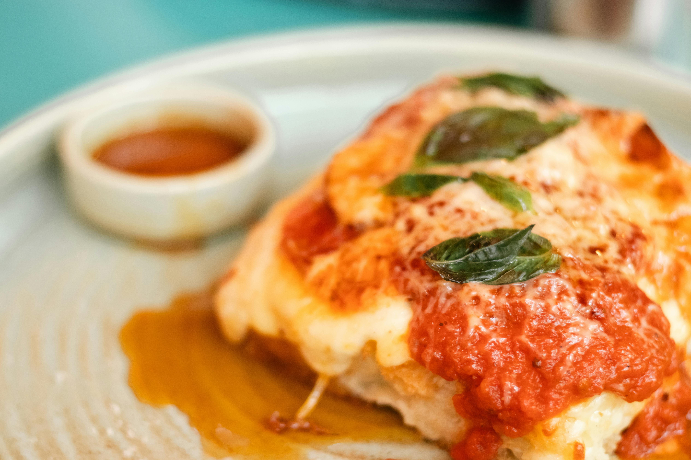

Home
Lasagna

Description
The lasagna of Naples, lasagne di Carnevale, is layered with local
sausage, small fried meatballs, hard-boiled eggs, ricotta and mozzarella
cheeses, and sauced with Neapolitan ragù, a meat sauce.
Lasagne al forno, layered with a thicker ragù and béchamel sauce and
corresponding to the most common version of the dish outside Italy, is
traditionally associated with the Emilia-Romagna region of Italy. Here,
and especially in its capital, Bologna, layers of lasagna are
traditionally green (the colour is obtained by mixing spinach or other
vegetables into the dough)[27] and served with ragù (a thick sauce made
with onions, carrots, celery, finely ground pork and beef, butter, and
tomatoes), béchamel sauce, and Parmesan cheese.
In other regions, lasagna can be made with various combinations of ricotta
or mozzarella, tomato sauce, meats (such as ground beef, pork, veal or
chicken), and vegetables (such as spinach, zucchini, olives, and
mushrooms), and the dish is typically flavoured with wine, garlic, onion,
and oregano. In all cases, the lasagne are baked (al forno).
Traditionally, pasta dough prepared in southern Italy used semolina and
water ; in the northern regions, where semolina was not available, flour
and eggs were used. In modern Italy, since the only type of wheat allowed
for commercially sold pasta is durum wheat, industrial lasagne are made
from durum wheat semolina.
Ingredients
- 1 tbsp olive oil
- 1 cup carrot, finely chopped
- 1 cup stalk celery, finely chopped
- 1 cup white onion, finely chopped
- 500g ground beef (mince)
- 500g ground pork (mince)
- 540g Passata
- 3 tbsp tomato paste
- 1 cups red wine, (250ml)
- 6 cups beef stock, (1.5 litres)
- 2 bay leaves
- 1 tsp sea salt flakes and pepper
- 5 tbsp butter, (70g)
- 5 tbsp flour all-purpose, (70g)
- 4 cups full fat milk
- 1/2 tsp nutmeg
- 1 cup parmesan, (70g)
- 1 tsp sea salt and pepper
- 500g fresh lasagna pasta sheets
- 250g mozzarella
Steps
-
Finely chop the carrot, onion and celery and saute the vegetables gently
in a large frying pan with the olive oil. Once the vegetables are soft
add the beef and pork mince and cook until browned.
-
If there is a lot of excess fat in the pan, spoon some out. Add the red
wine and reduce by half.
-
Once the wine has reduced, add the passata (tomato puree), tomato paste,
bay leaves, 4 cups of beef stock (1 litre) and a pinch of salt and
pepper.
-
Stir everything together and leave to simmer on a low heat for 2.5-3
hours uncovered. Add the rest of the beef stock half way through.
- Add the butter to a saucepan and cook until melted and bubbling.
-
Add the flour to the melted butter and stir to form a paste. Let the
flour cook for 1 minute.
-
Slowly whisk half of the milk into the butter and flour constantly
whisking to avoid any lumps. Once it has started to thicken add the rest
of the milk, nutmeg, parmesan and a pinch of salt and pepper.
-
Continue to heat the sauce whilst stirring until thickened enough to
coat the back of a wooden spoon. Take off the heat and set aside.
- Preheat the oven to 180C.
-
To assemble the lasagne, spoon a small amount of ragu on the very bottom
of the baking dish. Top with and even layer of lasagna pasta sheets (cut
the pasta sheets to fit your baking dish).
-
Add a few more spoons of ragu so the pasta is completely covered
followed by 2 ladels of white sauce.
-
Repeat the layers of pasta, ragu and bechamel sauce until everything is
used up making sure to keep enough of bechamel sauce for the very top
layer (you should have 4-5 layers of pasta).
-
Cover the top layer of the lasagne with torn mozzarella and then bake in
the oven for 45minutes or until bubbling and golden.
- Let it cool slightly for 5-10 minutes before serving.